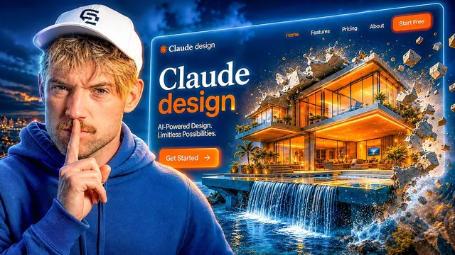

1만 달러짜리 웹사이트를 만드는 클로드 디자인 스킬

원본 영상 보기 →
- "예쁨"은 기본값이고 차별점은 그 주변에 있다
- 홈페이지 한 장이 아니라 사이트맵을 먼저 판다
- AI 티는 신뢰를 깎는다
Insane Claude Design Skills You Need for $10,000 Websites
채널: Jack Roberts 게시일: 2026-08-31 원본: https://www.youtube.com/watch?v=pUu4G2lINnk
한 줄 요약
Claude는 예쁜 웹사이트는 잘 만들지만 "팔리는" 웹사이트는 그것만으로 안 된다. 이 영상은 레퍼런스 기준 잡기, 전체 사이트 구조 설계, 이미지 생성, 스크롤 스토퍼(인터랙티브 요소), 모바일 최적화, AI 티 지우기(deslopification), UI 컴포넌트 가져오기, SEO까지 7단계 스킬을 로핑 회사 데모 사이트를 만들며 순서대로 보여준다.
전체 내용 정리
예쁜 것과 팔리는 것은 다르다 — 7단계 스킬로 접근한다
발표자(Jack Roberts)는 Claude가 "세계 1위 디자인 에이전트"라고 부를 만큼 예쁜 사이트를 잘 만들지만, 예쁘다고 해서 그 사이트가 물건을 팔거나 고객을 데려오는 건 아니라고 말한다. 팔리는 웹사이트를 만들려면 "웹사이트 자체"가 아니라 그 주변의 것들(기준, 구조, 카피, 심리, 모바일, SEO)을 다뤄야 한다. 영상은 이 스킬들을 7개 레벨로 나눠, 디자인 전문가가 아니어도 모바일 최적화되고 사람이 쓴 것처럼 읽히고 구조가 제대로 잡힌 사이트를 만드는 법을 로핑(지붕 시공) 회사 예시로 시연한다.
레벨 1 — 기준점(골드 스탠다드) 찾기
좋은 웹사이트를 만드는 출발점은 "이 업종에서 최고는 어떤 모습인가"를 아는 것이다. 발표자는 레퍼런스 소스로 referral.design을 추천한다. 여기서 자기 니치에서 상을 받았거나 실제로 고객을 전환시키고 있는 "금본위" 사이트를 하나 고른다. 영상에서는 예시로 Mintlify를 고른다(배경 처리, 스크롤 연출이 좋은 사이트라고 평가). 이렇게 뽑은 레퍼런스가 "디자인 DNA / 디자인 청사진" 역할을 하고, 그것을 Claude에 넘기면 그 장점을 흡수한 내 버전을 만들 수 있다.
레벨 2 (구조) — 홈페이지 너머, 전체 사이트 구조를 먼저 짠다
대부분이 홈페이지 한 장만 생각하지만, 팔리는 사이트는 전체 구조가 있어야 한다. 고객은 홈에만 머물지 않고 회사소개, 서비스, 프로젝트, 블로그, 문의 페이지로 들어가기 때문이다. 발표자는 Relume(영상에서 "Reloom/Room"으로 발음)이라는 툴을 쓴다. 디자이너들이 만든 툴이라 디자인 지식이 많이 내장돼 있고, 브리프 하나만 넣으면 전체 사이트맵, 와이어프레임, 스타일 가이드(색상 등)를 뽑아준다. 사용 흐름은 이렇다. Relume에서 새 프로젝트를 만들고 "베스트 인 클래스 로핑 회사를 아래 디자인 원칙으로 만들어줘"처럼 설명한 뒤, 레벨 1에서 찾은 레퍼런스 URL과 디자인 원칙 텍스트를 붙여넣는다. 그러면 사이트맵이 생성되고, 섹션을 위아래로 옮기며 구조를 다듬을 수 있다("인쇄 전 1온스가 인쇄 후 1파운드 값어치"라는 말로 사전 설계의 중요성을 강조). 만족스러우면 우측 상단 export에서 Claude Design으로 바로 보내거나 HTML(zip)로 내보낸다. 그 zip을 Claude에 업로드하고 레퍼런스 링크와 함께 "이 zip과 디자인 시스템으로 웹사이트를 만들어줘"라고 시킨다. 여기에 "Design Loop 스킬"(영상 설명란 두 번째 링크, 무료 리소스 페이지에서 받음)을 복사해 Claude에 넣으면 원하는 스타일을 잡는 데 도움이 된다. 참고로 Relume 자체도 publish 기능이 있어 CMS처럼 사이트를 그대로 발행할 수 있고, 라이브러리에서 이미지·스타일을 보고 설정에서 메타 타이틀·메타 설명 같은 페이지 요소를 편집할 수 있다.
레벨 2 (이미지) — 최신 모델로 이미지·로고·영상을 생성해 붙인다
Claude가 레퍼런스처럼 아름다운 사이트를 만들려면 최신 모델로 좋은 이미지를 만들 능력을 줘야 한다. 발표자는 Higgsfield(영상에서 "Higsfield/Hakesfield" 등으로 발음)를 항상 쓴다고 말한다. 자기 웹사이트와 프레젠테이션의 모든 이미지를 여기서 만든다고. Higgsfield는 Claude에 쉽게 연결된다. 해당 페이지 URL을 복사해 Claude에 "Higgsfield CLI에 연결해서 이미지·영상을 만들 수 있게 해줘, 링크는 이거야"라고 하면 새 브라우저가 열리고 로그인하면 연동된다. Higgsfield는 3D 애니메이션뿐 아니라 예상 못 한 스펙터클한 결과물도 만들 수 있고, 클라이언트가 로고가 없으면 진행 중에 로고까지 만들어낸다. 영상 데모에서는 레퍼런스의 초록/검정 스타일을 그대로 가져온 로고, 스크롤 시 나타나는 애니메이션, "함께 일하는 회사들"(Anthropic, Slack, Stripe 등 예시) 섹션, 하단 스크롤 연출 등이 생성됐고, 서비스·회사소개 등 하위 페이지도 사이트맵대로 만들어졌다. 이때 쓰는 컴포넌트는 AI가 만든 게 아니라 사람이 만든 것들이라 스타일 일관성이 좋다고 강조한다.
레벨 3 — 스크롤 스토퍼(주의를 붙잡는 인터랙티브 요소)
사람들은 "웹사이트"만 생각하지만, 전환을 크게 늘리려면 주의를 끄는 장치를 여러 방식으로 만들 수 있다. 발표자는 Higgsfield 영상 생성으로 만든 화면 정지급 연출을 예로 든다. 영감 소스로는 Savee(영상에서 "save 두 개의 E"로 언급)를 추천한다. 여기서 "dashboard UI", "sign up form" 같은 키워드로 검색해 마음에 드는 디자인을 찾는다(Pinterest도 되지만 다들 쓴다고). 문제는 찾은 게 그냥 이미지지 바로 가져다 쓸 수 있는 컴포넌트가 아니라는 점. 그래서 그 이미지를 복사해 Claude로 가서 /design loop를 입력하고 "이걸 로핑 버전으로 만들어줘. 사용자가 지붕 사진을 업로드하고 몇 가지 질문에 답하면 Siri 같은 애니메이션이 재생된 뒤 가격을 보여주고 그 정보를 캡처하게 해줘"라고 지시한다. Siri 스타일 애니메이션 영상도 다운받아 참고로 함께 준다. 결과물은 "지붕 무료 견적" 폼: 이미지 업로드, 우편번호 입력, "가격 보기" 클릭 → "지붕 경사와 기와 확인 중, 자재 가격, 거의 다 됐어요" 애니메이션 → £7,150 결과, 리뷰, 무료 실측 예약 버튼까지. "이건 우리가 만들기 전까진 존재하지 않던 것"이라는 점이 핵심. 이미지 하단 여백 블렌딩 같은 디테일도 챙긴다.
레벨 4 — 모바일 최적화
트래픽의 최소 60%는 모바일인데 대부분의 콘텐츠(자기 자신 포함)는 데스크톱 화면 위주로 만들어진다. 방법은 Claude에 "이 웹사이트를 모바일 최적화해줘. 실전 검증되고 리뷰 좋은 repo를 찾아서 모바일 디자인 원칙을 다 따르게 해줘"라고 시키는 것. 데모에서는 처음엔 모바일이 엉망이었고 손을 봐야 했지만, 최종적으로는 실제로 읽고 쓸 수 있는 모바일 사이트가 됐고 햄버거 메뉴도 들어갔다. 발표자는 지난 테크 스타트업을 만들어 팔았고 SEO에 강했는데, 항상 모바일 퍼스트로 시작해 데스크톱으로 거꾸로 작업했다고 말한다. Claude가 repo로 많은 체크를 해줄 수 있지만, 결국 본인이 직접 모바일에서 사이트를 눌러보며 확인하는 것에는 대체재가 없다.
레벨 5 — AI 슬롭 제거(deslopification)
이 영상에서 가장 큰 문제로 꼽는 "AI 슬롭 몬스터와의 싸움". AI는 자기 자신을 표현하는 아주 정형화된 방식이 있어서, AI가 쓴 글은 티가 확 난다(요즘 웹사이트 대부분이 Claude로 쓰여서 다 비슷하게 들린다). 발표자는 커뮤니티에서 이 질문을 하도 많이 받아 "카피 시스템"을 만들었다. 슬롭 관련 베스트 GitHub repo에서 정보를 긁어와, 위키피디아 같은 전형적 AI 문체 신호를 다 걸러내고, GPT 5.6도 거쳐 더 사람처럼 만든다. 바탕이 되는 핵심 심리는 "Don't make me think": 사람들은 웹사이트를 읽지 않고 훑는다. 한눈에 봐서 이 사이트가 뭐 하는 곳인지 이해돼야 한다. 이해하는 데 1분이 걸리면 너무 길다. 시스템 1(직관) 인지로 처리되게 쉽게 만들고, "고통을 이름 붙여" 말한다. 카피는 마케팅·심리·세일즈 원칙을 통과시킨다. 예: "Get started" 대신 "Start free", "AI를 배우는 재밌는 방법" 대신 "다들 AI를 쓴다". 시스템이 잡아낸 before → after 예시들:
- "Trusted, reliable, and built to last" → "Six nails per shingle. Every shingle."
- "Not just a roof, but peace of mind" → "설치 전 서면 견적과 고정 숫자(a written scope and a fixed number before anyone climbs the ladder)"
- 격상된 동사: "We leverage industry-leading materials to deliver unparalleled protection" → "We source materials from manufacturers who test for wind, hail, and sun"
- 빈 최상급: "the area's most trusted roofing experts" → "No roofing and only roofing since 2001"
- em 대시 남발: "Our team — trained, certified and local — is ready to help" → "38 on the crew, factory trained for every material we install"
사람들은 AI 사이트 냄새를 6마일 밖에서도 맡는다. 이 문제를 안 풀면(그리고 모바일 최적화를 안 하면) 소용없다.
레벨 6 — 아이콘과 쇼스토퍼(UI 스나이핑)
"UI 스나이핑"은 마음에 드는 UI 컴포넌트를 아무거나 찾아서 내 사이트로 가져오는 것. Relume도 자체 컴포넌트 라이브러리를 키우고 있고(디자이너가 만든 게 장점), 21st.dev에서는 라이브러리, 배경, 보더 등을 찾을 수 있다. Relume MCP가 있으면 바로 요청하고, 21st.dev 같은 데서는 코드를 복사해 Claude에 "이걸 내 사이트에 추가해줘"라고 한다. 데모에서는 호버 시 "일주일 안 예약됨", "4,800개 지붕 건조 유지" 같은 신뢰도(크레디빌리티) 요소가 사이트에 통합됐고 위치도 자유롭게 옮길 수 있다. 아이콘은 icons8, flaticon, IconScout 등이 있고 월 $10~12 수준이며 라이선스 범위에서 쓴다. 타깃 데모그래픽(밀레니얼·Gen Z면 쿨한 그래픽)에 맞춰 스타일을 고르면 신선해 보인다.
레벨 7 — SEO화(SEOification)
GitHub에 SEO 스킬이 많은데 발표자는 "Claude SEO"(리뷰 괜찮은 편, 제작자가 콘텐츠 크리에이터)를 선호한다. Claude에 "인터넷에서 가장 좋은 SEO 전략을 찾고, 이 SEO repo를 보고, 내 웹사이트용 체크리스트와 전략을 만들어줘. 내가 랭크하고 싶은 키워드는 이것들이고, 의도는 이렇고, 나한테 내 고객에 대해 질문해서 롱테일·숏테일 의도 키워드를 같이 찾고, 볼륨과 난이도로 순위를 매겨줘"라고 시킨다. 결과로 SEO 전략, 콘텐츠 로드맵, 온페이지 제안이 나온다. 예시로 자기 음성→텍스트 스타트업 Glider에 대해 만든 페이지를 보여주는데, "speech to text" 검색량, 수요 지수, 난이도, 랭크할 만한 28개 키워드, "Whisper Flow alternative" 같은 롱테일이 정리돼 있다. 배포는 Claude에 GitHub 비공개 repo로 올리라고 시키고, 전체를 Vercel에서 돌린다(Vercel이 이 채널에서 보여준 많은 사이트를 호스팅). 설정은 Claude가 단계별로 설명해준다.
마무리 — 다음은 "디자인 운영체제"
이 디자인 스킬들은 팔리는 예쁜 사이트를 만드는 데 유용하지만, 자기만의 "디자인 운영체제(design operating system)"가 없으면 시간·생산성·가치를 너무 많이 흘리게 된다. 그걸 세팅하는 법이 다음 영상 주제다. (영상 중간중간 유료 "Claude Code 마스터클래스"와 Claude Code OS도 홍보한다.)
핵심 인사이트
- "예쁨"은 기본값이고 차별점은 그 주변에 있다: Claude로 예쁜 화면을 뽑는 건 이제 누구나 한다. 팔리는 사이트를 가르는 건 레퍼런스 기준, 전체 페이지 구조, 사람이 쓴 것 같은 카피, 모바일, SEO 같은 "덜 보이는" 작업이다. 외주를 맡길 때 평가 기준도 여기에 둬야 한다.
- 홈페이지 한 장이 아니라 사이트맵을 먼저 판다: 고객은 회사소개·서비스·후기·문의로 이동하며 결정을 내린다. 구조(사이트맵·와이어프레임)를 먼저 확정하고 디자인에 들어가는 것이 "인쇄 전 1온스가 인쇄 후 1파운드"라는 원칙.
- AI 티는 신뢰를 깎는다: "믿을 수 있고 최고 품질" 류의 빈 최상급, 격상된 동사, em 대시 남발은 방문자가 "이거 AI가 썼네"라고 느끼게 한다. 구체적 숫자와 약속("설치 전 서면 견적과 고정 가격")으로 바꾸면 즉시 더 신뢰가 간다.
- 인터랙티브 리드 마그넷은 만들어낼 수 있다: "사진 올리면 견적 나오는 계산기"처럼 존재하지 않던 전환 장치를 레퍼런스 이미지 한 장으로 주문 제작할 수 있다. 정적 페이지보다 정보 수집과 전환에 강하다.
- 모바일은 위임해도 검수는 본인이: 트래픽 60%+가 모바일인데 대부분 방치돼 있다. 툴이 자동 점검을 해줘도 결국 본인 폰으로 직접 눌러봐야 한다.
오늘 당장 해볼 것
- 우리 업종에서 "이 정도면 최고" 싶은 웹사이트 3개를 골라 URL을 정리해둔다(referral.design 같은 레퍼런스 사이트 활용). 제작 업체에 "이 사이트들처럼 만들어달라"고 레퍼런스로 넘긴다.
- 지금 우리 홈페이지를 스마트폰으로 열어, 5초 안에 "여기가 뭐 하는 곳인지" 파악되는지·글자가 읽히는지·버튼이 눌리는지 직접 확인한다. 안 되면 업체에 "모바일 화면부터 다시 잡아달라"고 요청한다.
- 우리 사이트 카피를 소리 내어 읽으며 "신뢰할 수 있는", "최고 품질", "업계 선도" 같은 뜬구름 문장에 표시한다. 업체에 "구체적 숫자와 약속으로 바꿔달라"고 요청한다(예: "설치 전 서면 견적과 고정 가격").
- 업체에 이렇게 물어본다: (a) 홈페이지 말고 회사소개·서비스·후기·문의까지 전체 사이트맵을 먼저 잡고 시작하는지, (b) "사진 올리면 견적 나오는" 식의 인터랙티브 상담 폼을 넣을 수 있는지, (c) 검색 키워드를 볼륨·난이도로 정리한 SEO 전략과 콘텐츠 로드맵을 함께 주는지.